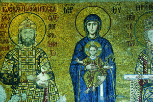

Lezione 5  Invasioni barbariche
Invasioni barbariche

-
250
490
-
230
460
-
205
310
-
375
580

COSTANTINOPOLI
La basilica di Santa Sofia, eretta a partire dal VI secolo, è il simbolo della ricchezza, dello splendore e della solennità dell’arte bizantina, che ebbe come centro di irradiazione Costantinopoli, capitale dell’Impero d’Oriente e”Seconda Roma”, e che mantenne i suoi caratteri distintivi per molti secoli. In questo mosaico del XII secolo vediamo la Vergine tra l’imperatore Comneno e la moglie Irene che le offre un manoscritto.
535-565: i bizantini guidati dal generale Narsete e gli ostrogoti si combattono per diciotto anni nella guerra greco-gotica, vinta dai bizantini.DITTICO BARBERINI
Il ”Dittico Barberini”, capolavoro della scultura in avorio bizantina risalente al VI secolo, riprende l’iconografia classica dell’imperatore (probabilmente Giustiniano) che trionfa sui barbari; ma insieme alla Vittoria alata che lo incorona, vediamo nella fascia superiore il Cristo benedicente e due angeli: il potere imperiale viene sottoposto alla superiore autorità divina.RAVENNA
Dopo la conquista da parte di Giustiniano, Ravenna rappresentò il primo e più importante centro di diffusione dell’arte bizantina in Italia e nell’Occidente: nei mosaici di San Vitale, realizzati nel VI secolo, l’imperatrice Teodora, moglie di Giustiniano, è sontuosamente raffigurata con il suo seguito, immersa nello splendore del’oro.PALESTINA
540-630: conflitto tra l’Impero bizantino e l’Impero persiano. Prima occupazione da parte dei persiani di Siria e Palestina. Bisanzio riesce poi a recuperare le province.